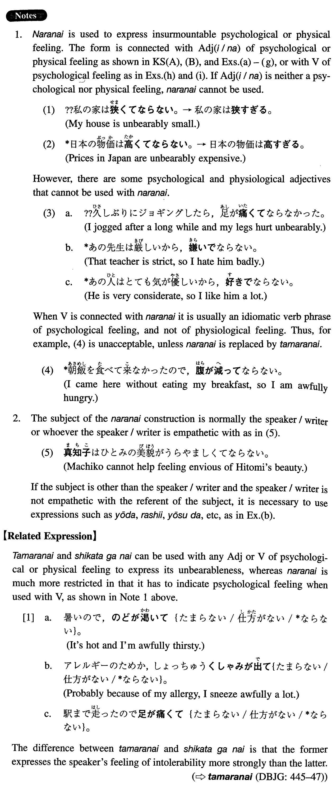

←
DoJG
→
ならない
(I. 219)
Example sentences
(ksa).
病気の母のことが心配で
ならない
。
I'm very much worried about my sick mother. (Literally: I cannot help worrying about my sick mother).
(ksb).
日本の歴史をもっと深く知りたくて
ならない
。
I'm dying to know Japanese history more deeply.
(ksc).
一人で住んでいる母親のことが気になって
ならない
。
I cannot help worrying about my mother who is living alone.
(a).
夫が単身赴任しているので、寂しくて
なりません
。
My husband has gone alone for work and I cannot help feeling lonely.
(b).
二人の婚約が決まって、嬉しくて
ならない
ようだ。
The couple have decided to get engaged and they look overjoyed.
(c).
松本清張の推理小説は面白くて
ならない
。
The mystery novels by Seicho Matsumoto are irresistibly interesting.
(d).
隣の家のステレオがやかましくて
ならない
。
Our neighbour’s stereo is unbearably noisy.
(e).
山田先生がこの大学をお辞めになるので、残念で
ならない
。
Since Professor Yamada is going to quit this university, I cannot help feeling disappointed.
(f).
東京の夏は暑くて
ならない
。
The summer in Tokyo is awfully hot.
(g).
駅の階段を急いで上がったら、息が苦しくて
ならなかった
。
When I rushed up the stairs at the station, it became unbearably painful to breathe.
(h).
買ってきたばかりのテレビがすぐ壊れてしまい、腹が立って
ならなかった
。
I got really mad because the TV set which I just bought got broken right away.
(i).
仕事がうまく行っていないので、気が滅入って
ならない
。
I feel helplessly depressed because my business isn't going well.
Formation
(i)
Adjective (い/な)て
ならない
嬉しくて
ならない
I cannot help feeling happy
残念で
ならない
I cannot help feeling sorry
(ii)
Vて
ならない
気がせいて
ならない
I cannot help feeling pressed
